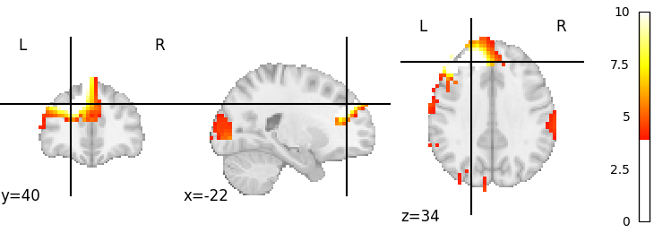
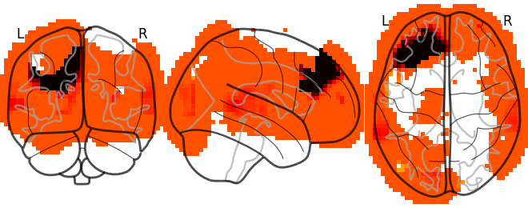
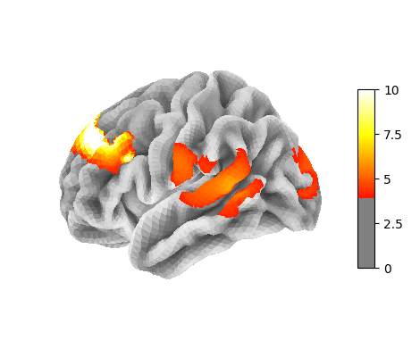

Note
Click here to download the full example code
Nifti volumes - functional connectivity analyses¶
Importage¶
# Generic Imports
import os,sys,glob,numpy as np,pandas as pd
# KF Tools and related imports
from kftools.data import fetch_file
from kftools.nifti import fc_for_seeds
import nibabel as nib
from nilearn.image import mean_img
from nilearn.surface import load_surf_mesh,load_surf_data,vol_to_surf
from nilearn import datasets
from nilearn.datasets import load_mni152_template
from nilearn.plotting import plot_glass_brain,plot_stat_map,plot_surf_stat_map
from matplotlib import pyplot as plt
Grab the data¶
data_dir='.'
fetch_file(data_dir=data_dir, filetype='kp-nii-hbo',
site='snic', task='rec', subid='sub008', sesid='ses02')
nii_hbo_f = 'snic_sub008_rec_ses02_0920-1711_kp-nii-hbo.nii.gz'
### seed coords from (Eggebrecht et al., 2014) ###
seed_coord_dict = {'vis':(-19.5, -102, -3),
'aud':(-67.5, -27, 12),
'mot':(-67.5, -12, 27),
'DAN':(-58.5, -69, -6),
'FPC':(-52.5, 24, 33),
'DMN':(-43.5, 21, 51)}
seed_coord_ser = pd.Series(seed_coord_dict)
fs5 = datasets.fetch_surf_fsaverage()
Out:
Downloading snic_sub008_rec_ses02_0920-1711_kp-nii-hbo.nii.gz
Downloading...
From: https://drive.google.com/uc?id=1582zc2EUUiWPnWEnSyPnBKfuq04BgNX_
To: /home/runner/work/kernel-flow-tools/kernel-flow-tools/examples/snic_sub008_rec_ses02_0920-1711_kp-nii-hbo.nii.gz
0%| | 0.00/22.1M [00:00<?, ?B/s]
5%|4 | 1.05M/22.1M [00:00<00:02, 10.3MB/s]
57%|#####7 | 12.6M/22.1M [00:00<00:00, 59.9MB/s]
97%|#########7| 21.5M/22.1M [00:00<00:00, 71.5MB/s]
100%|##########| 22.1M/22.1M [00:00<00:00, 65.0MB/s]
Analysis and viz¶
Run FC GLM analysis
k = 'DMN'
res = fc_for_seeds(nii_hbo_f,dothese=[k])#,clip_vols=[k],radius=10)
z_maps,z_maps_masked = res
Out:
/opt/hostedtoolcache/Python/3.8.13/x64/lib/python3.8/site-packages/nilearn/glm/first_level/first_level.py:64: UserWarning: Mean values of 0 observed.The data have probably been centered.Scaling might not work as expected
warn('Mean values of 0 observed.'
Plot
img = z_maps[k]
dat = img.get_fdata()
dat_pos = dat.copy()
dat_pos[dat_pos<0] = 0
img_pos = nib.Nifti1Image(dat_pos,img.affine)
dat_pos_lhp = vol_to_surf(img_pos,fs5.pial_left)
disp = plot_stat_map(img_pos, threshold=4,vmax=10)
disp = plot_glass_brain(img_pos,threshold=4, vmax=10);
disp = plot_surf_stat_map(fs5.pial_left,dat_pos_lhp,bg_map=fs5.curv_left,threshold=4,vmax=10)
- 
- 
- 
Total running time of the script: ( 0 minutes 12.887 seconds)